generate_map 외곽 테두리
— 조수가 타일 깔 때마다 벽을 두르던 원인과 수정
코딩되어 있었다. generate_map 의 blankThemedMap() 이
테마·인자와 무관하게 맵 4변을 palette.obstacle 로 두르고 있었고, 끄는 인자가 없었다.
obstacle 은 생성 프로파일 13종 전부에서 통행 불가 벽/솔리드 타일이다.
같은 패턴은 create_map 에서 이미 2026-07-08 에 옵션으로 강등됐는데
generate_map 만 남아 있었다. border 인자(기본 none)를 추가해
외곽 통행 불가 칸을 80/80 → 0/80 으로 내렸다.
1. 측정 — 외곽 80칸 중 통행 불가 칸
맵 24×18 의 외곽은 80칸이다. 아래 수치는 isPassable() 로 직접 센 값이고,
동일 시드(seed:11)·동일 밀도(chokepoints:10)로 수정 전후를 돌렸다.
forest 가 80 이 아니라 56 인 이유: 이 프로파일의 장애물이 침엽수(290)이고, 나무 상·하 보정이 모서리 일부를 수관 타일로 덮으면서 통행 판정이 갈린다. 벽이 아니어도 외곽은 여전히 막혔다.
2. 눈으로 — 수정 전 / 수정 후
붉게 틴트한 칸이 통행 불가로 판정된 외곽 칸이다. 맵 내부를 가로·세로로 지나는 흙길은 틴트가 아니라 생성기가 입구→POI 로 실제로 판 통로다. 두 이미지의 내부는 픽셀 단위로 같다 — 테두리 페인팅만 조건 아래로 넣었고 난수 스트림은 건드리지 않았다.
theme="village" — 돌벽(306 = TILE.WALL)
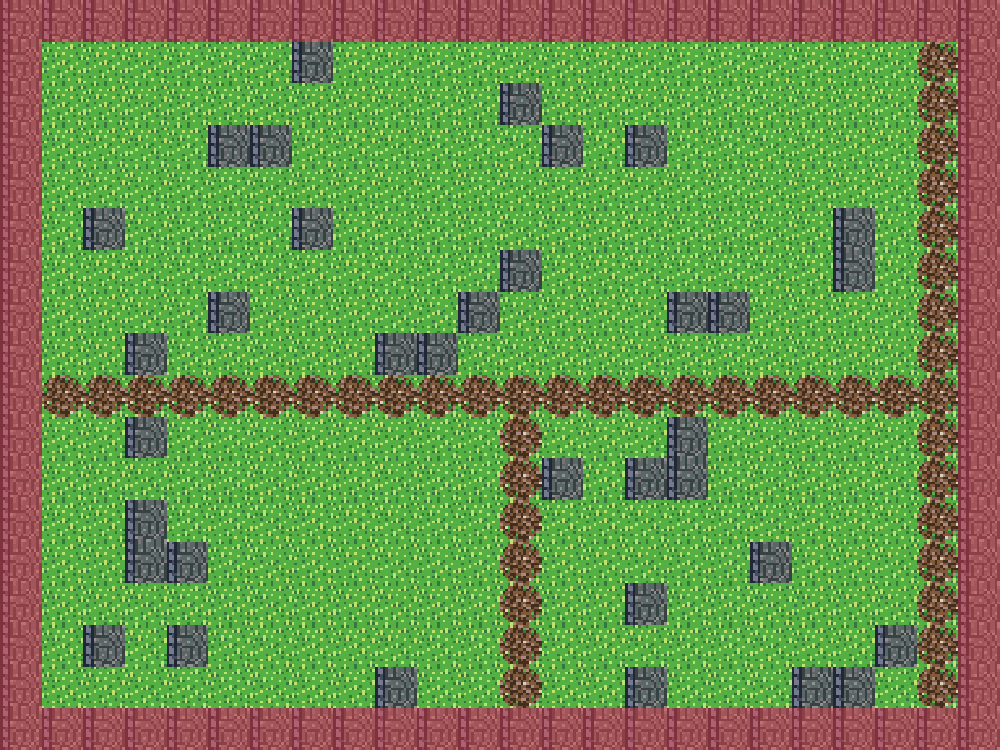
generate_map theme="village". 요청하지 않은 돌벽이 4변 전부.
외곽 통행 불가 80/80.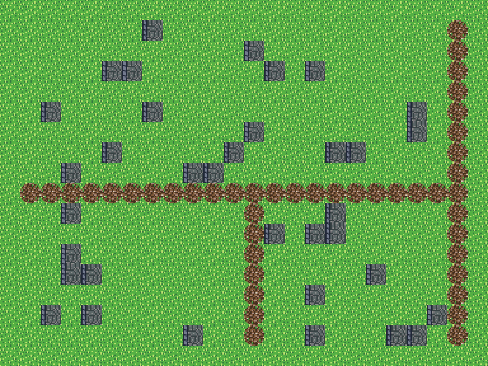
border 생략. 잔디가 맵 끝까지 이어진다.
외곽 통행 불가 0/80.theme="cave" — 돌벽(306) + 사막 가장자리 바닥(423)
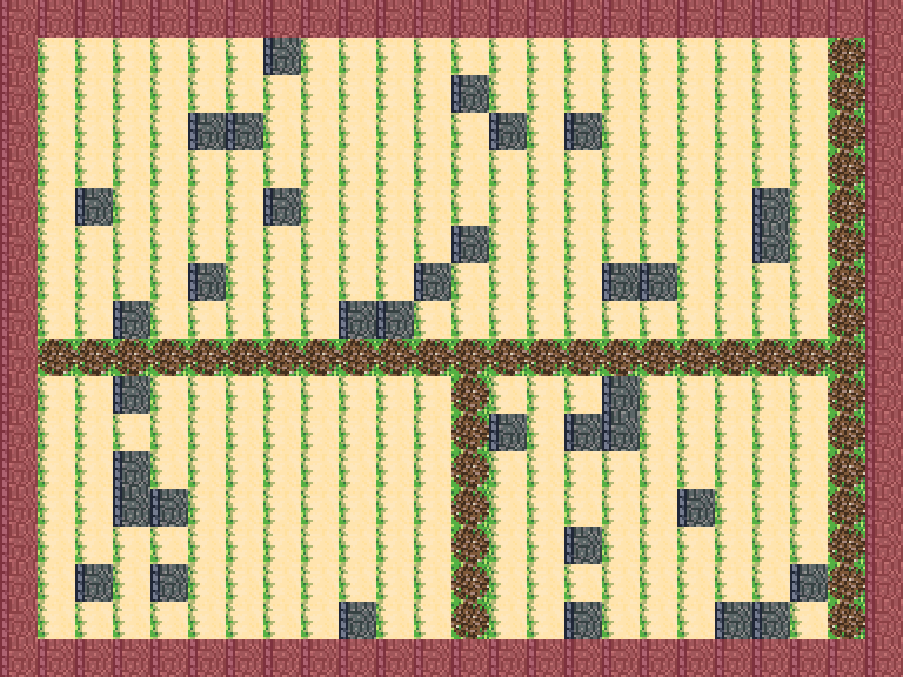
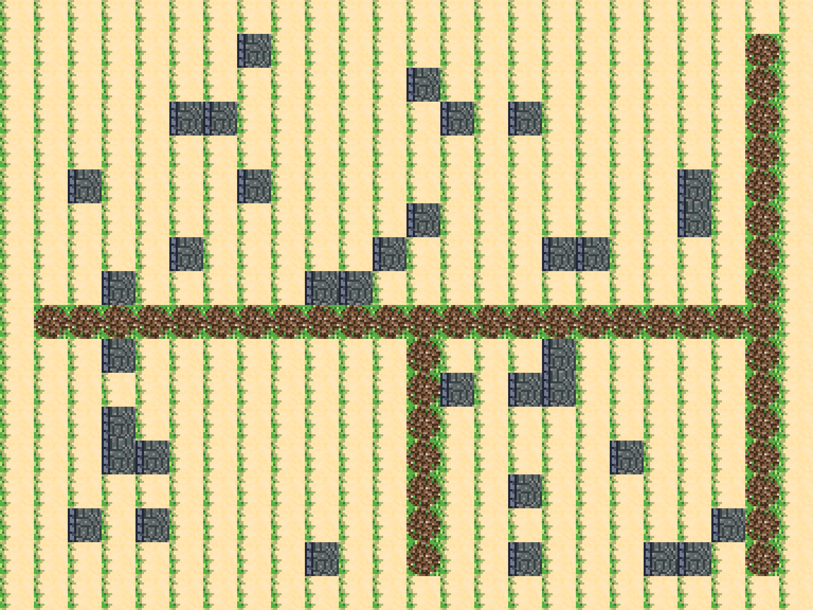
theme="forest" — 침엽수(290)
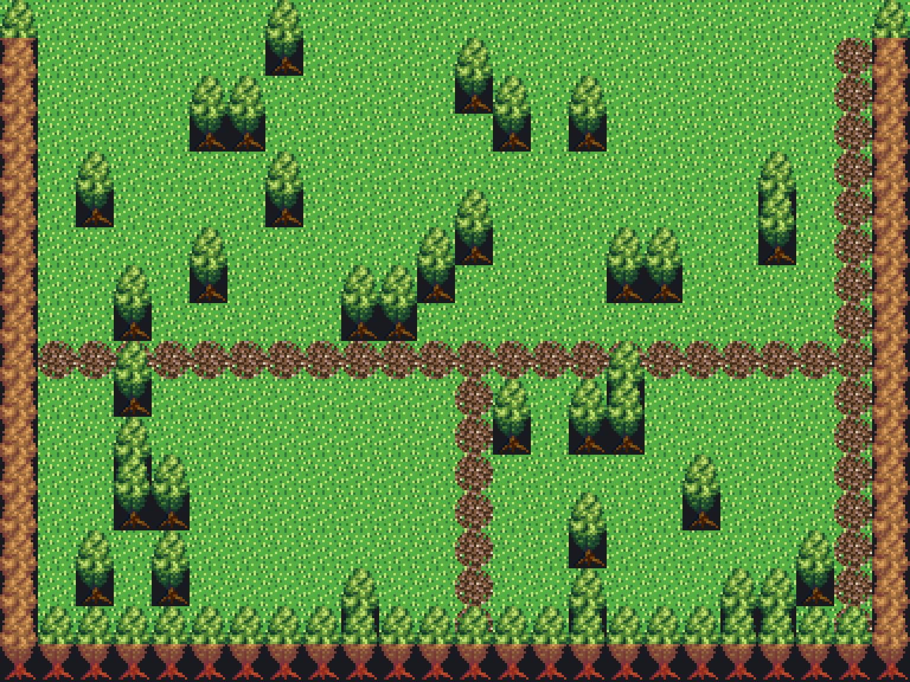
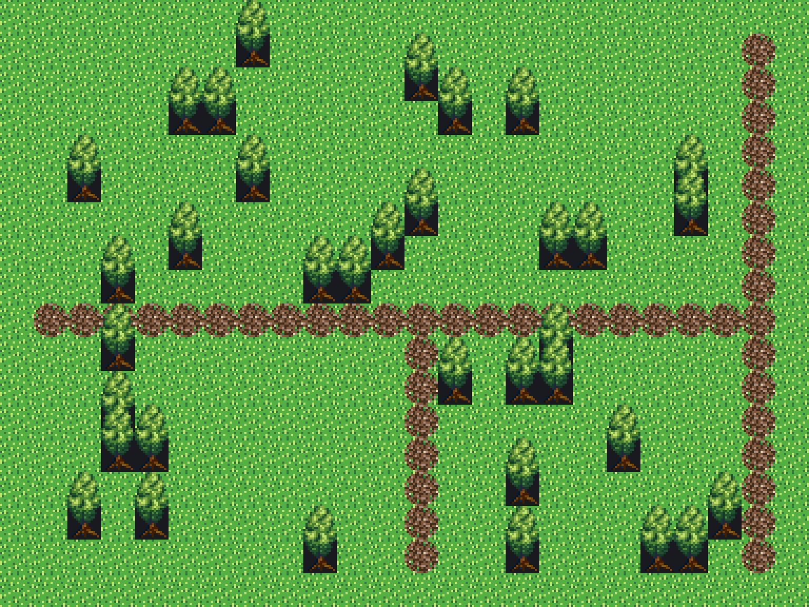
옵트인은 종전대로 — border:"wall"
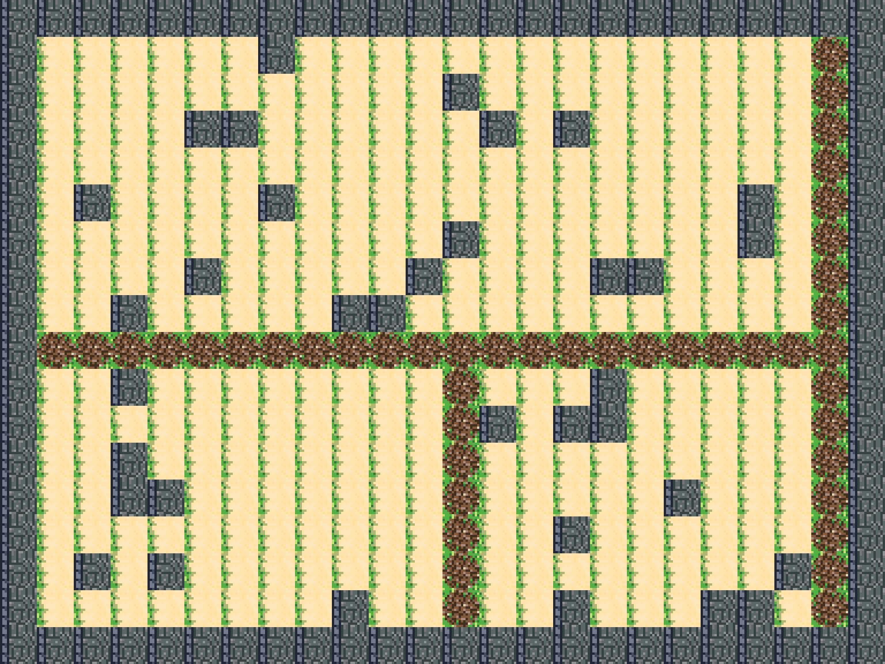
generate_map theme="cave", border:"wall" — 동굴·던전처럼 외곽이
막혀야 할 때는 명시해서 쓴다. 외곽 통행 불가 80/80.3. 왜 “항상 벽”이었나 — 장애물 팔레트 13종
테두리 타일은 테마 팔레트의 obstacle 을 그대로 쓴다.
그 obstacle 이 프로파일 13종 전부에서 통행 불가 솔리드 타일이라
어떤 타일셋을 골라도 결과가 “외곽에 벽”이었다. 아래 스와치는 각 프로파일의 치프셋에서
그 타일을 실제로 잘라낸 것이다.
| 타일셋 프로파일 | 레이아웃 | village | forest | cave |
|---|---|---|---|---|
combined_town (기본) | settlement |  306 |
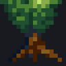 290 |
 306 |
dungeon | dungeon | 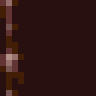 306 |
 306 |
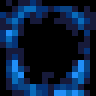 366 |
interior | rooms |  366 |
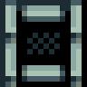 366 |
430 |
ship | ship |  396 |
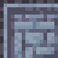 396 |
 396 |
world | world |  306 |
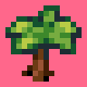 290 |
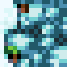 306 |
retro_dungeon | dungeon | 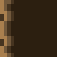 306 |
 306 |
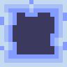 366 |
retro_exterior | settlement |  306 |
 290 |
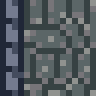 306 |
retro_house | rooms | 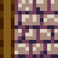 42 |
 42 |
 42 |
retro_world | world |  306 |
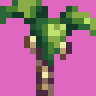 290 |
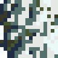 306 |
modern_exteriors_nocturne | city |  30 |
 30 |
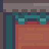 30 |
scarloxy_grassland | settlement | 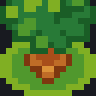 48 |
 48 |
 48 |
scarloxy_wilds | wilds |  117 |
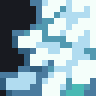 145 |
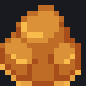 117 |
scarloxy_indoor | rooms | 31 |
 31 |
 31 |
4. 어떻게 사용자 화면까지 닿았나
generate_map 은 domains 태그가 없어 항상 노출 후보인데, LLM 에 넘기는
툴 목록 상한(40장)에 밀린다. 즉 맵을 만드는 턴에는 노출되고, 곧이어 타일을 깔라고 하면
그 테두리는 이미 박혀 있다. 아래는 computeActiveToolDomains() +
toOpenAiTools() 로 직접 뽑은 값이다.
| 지시문 | 열린 도메인 | 노출 툴 | generate_map | create_map |
|---|---|---|---|---|
맵 만들어줘 | core, map | 35 | 노출 | 노출 |
동굴 맵 만들어줘 | core, map | 35 | 노출 | 노출 |
타일 깔아줘 | core, map, tile | 40 | 상한에 밀림 | 노출 |
새 맵 만들고 타일 깔아줘 | core, map, tile | 40 | 상한에 밀림 | 노출 |
부수적으로 확인한 두 가지 — 둘 다 이번 수정 범위 밖이라 손대지 않았다.
306(TILE.WALL)은 combined_town 하네스의 어느 타일 그룹에도 속하지 않는다 (src/project/tilesetHarness/combinedTownGroups.ts:580주석이 명시). v3 어휘 밖 타일이라material기반 툴로 겨냥해 지울 수 없었다.generate_map은SPATIAL_BUILD_TOOLS(src/ai/buildSpec.ts:73-82)에 없어 스펙 게이트를 타지 않는다. 밑그림 검증 없이 맵을 채운다. 다만create_map/generate_map의 게이트 제외는src/ai/proposalCompleteness.ts:221-224에 의도로 적혀 있다.
5. 수정
create_map 이 2026-07-08 에 받은 처방과 같은 모양으로 맞췄다 — 같은 인자 이름,
같은 enum, 같은 기본값.
// src/editor/tools/generateMapTool.ts
type MapBorder = "none" | "wall";
function blankThemedMap(…, border: MapBorder): GameMap {
…
- for (let x = 0; x < width; x += 1) {
- setLower(map, x, 0, palette.obstacle);
- setLower(map, x, height - 1, palette.obstacle);
- }
- for (let y = 0; y < height; y += 1) {
- setLower(map, 0, y, palette.obstacle);
- setLower(map, width - 1, y, palette.obstacle);
- }
+ if (border === "wall") {
+ for (let x = 0; x < width; x += 1) {
+ setLower(map, x, 0, palette.obstacle);
+ setLower(map, x, height - 1, palette.obstacle);
+ }
+ for (let y = 0; y < height; y += 1) {
+ setLower(map, 0, y, palette.obstacle);
+ setLower(map, width - 1, y, palette.obstacle);
+ }
+ }
// 스키마
+ border: { type: "string", enum: ["none", "wall"],
+ description: "테두리 처리(기본 none, wall이면 외곽 4변을 테마 장애물 타일로 봉인)" },- 기본값
none. 알 수 없는 값은toolRunner.ts:75의validateArgs가 enum 으로 거부한다 — 조용히 무시되지 않는다. - 툴 설명에 “동굴/던전처럼 외곽이 막혀야 할 때만” 을 박아 LLM 쪽 기본 선택을 바꿨다.
summary·data.border에 테두리 상태를 실어 무엇이 적용됐는지 보이게 했다.- 장애물 산포·통로 카빙 루프는 손대지 않았다. 난수 스트림이 그대로라 동일 시드의 내부 지형이 수정 전과 픽셀 단위로 같다(§2 이미지 대조).
docs/tool-catalog.md는scripts/generateToolCatalog.mjs로 재생성.
6. 검증
| 케이스 | 고정하는 계약 |
|---|---|
3 테마 × border 생략 | data.border === "none" + 외곽 80칸 전부 통행 가능 |
border:"wall" | 네 모서리 전부 통행 불가 — 종전 동작 보존 |
border:"walls"(오타) | ok:false + issues 에 border 언급 + 맵 미생성 |
| 번들 타일셋 13종 디스패치 | border:"wall" 로 고정 — 이 케이스의 관측점(외곽 0,0)이 장애물 통행 판정이라서 |
| 기존 6종(3 테마 × 시드 2) | projectLint 0 error + 입구→모든 POI 도달 — 회귀 없음 |
test/toolCatalog.test.ts·test/workPlan.test.ts·test/toolRegistry.test.ts·test/toolsMapManagement.test.ts— 65 passed.tsc --noEmit— 변경 파일에서 새 오류 없음.test/generateMap.test.ts의image.type:"generated"오류 1건은 HEAD 에도 있는 기존 것이다(내 삽입으로 줄번호만 111 → 181 로 이동).
7. 같은 증상으로 의심했지만 결함이 아닌 경로
“외곽에 벽”을 만들 수 있는 다른 경로를 전부 실측했다. 결론은 셋 다 손댈 것이 아니다.
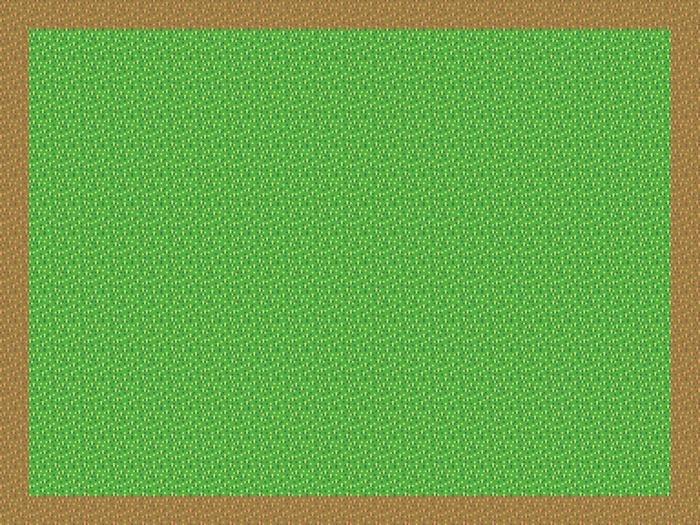
create_map 기본 — 외곽 통행 불가 0/80.
2026-07-08 47b0d51d(“강제 돌벽 테두리 제거”)의 결과다.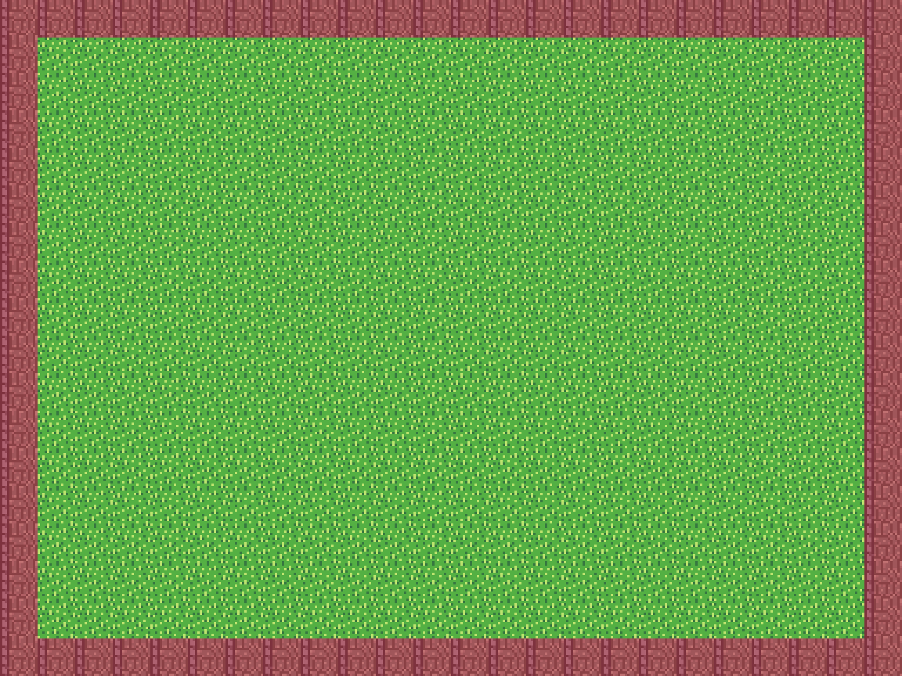
create_map border:"wall" — 외곽 통행 불가 80/80.
스키마에 남아 있으니 모델이 고를 수는 있지만, 기본이 아니다.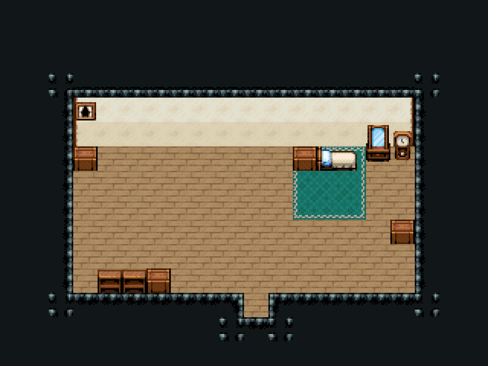
run_interior_room_pipeline — 바닥 bbox 바깥이 전부 천장·벽이다.
외곽 통행 불가 66/66. 방에 벽이 있는 건 맞는 동작이다.
다만 start_interior_room_session/run_interior_room_pipeline 은
타일 깔아줘 에서도 노출되므로(§4), 평범한 바닥 깔기가 실내 경로로 라우팅되면
화면상 결과는 “AI 가 외곽에 벽을 둘렀다”와 구분되지 않는다. 라우팅 쪽 과제로 남긴다.프롬프트 유도 — 코드가 아니다
src/editor/regionTask/regionIntentRouter.ts:57 은 야외 구조물을
“build_wall+fill_region(울타리·안뜰·광장 바닥, 탑 등 구조물)”로 안내한다.
build_wall 은 rect 를 링이 아니라 통째로 채우므로
(src/editor/tools/v3/rmTypeExpander.ts:100 expandNineSlice),
“바닥에 경계를 두른다”를 이 레시피로 만들면 겉 rect = 벽, 안 rect = 바닥 → 벽 링이 나온다.
하드코딩이 아니라 안내 문구가 만드는 패턴이라 이번엔 건드리지 않았다.
8. 남긴 것
TILE.WALL(306)을 v3 타일 어휘 그룹에 편입 — 지금은material기반 툴로 겨냥·철거가 안 된다.타일 깔아줘류 지시가 실내 방 파이프라인으로 새는 라우팅 — §7 이미지가 사용자 눈에 어떻게 보이는지를 보여준다.cave프로파일의 바닥이 combined_town 에서423(Desert edge)인 점. 동굴 바닥으로 읽히지 않는다. 팔레트 문제라 별건.